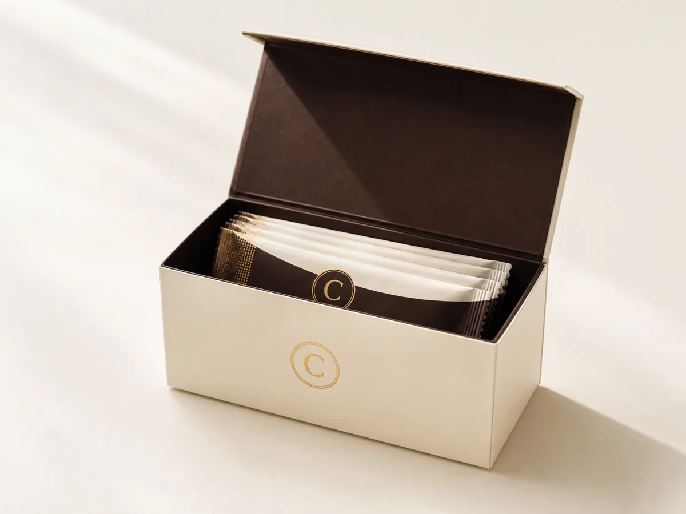
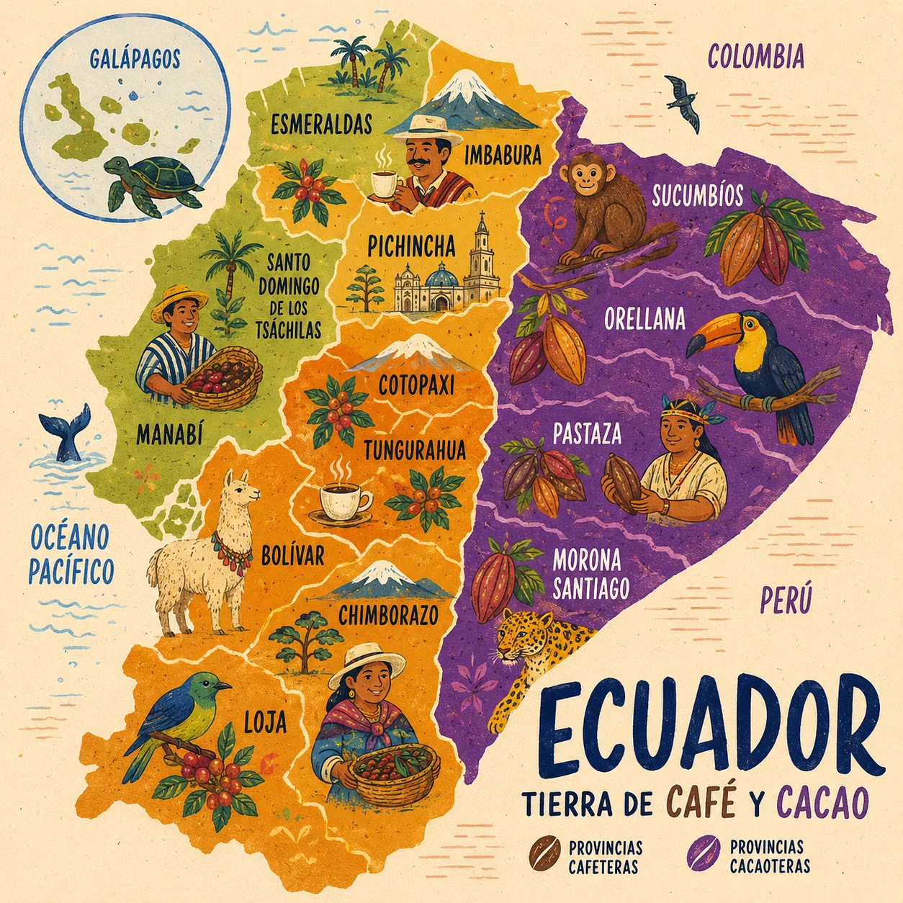

Descuentos exclusivos
Promociones personalizadas que mejoran con tu historial de compras.
C QR verificado · Lote CG-2026-EC
Tu escaneo te trajo al pasaporte Coffee Golden: conoce el origen, el tostado y la preparacion del sobre que tienes en tus manos.
La experiencia Coffee Golden
Calidad artesanal, informacion de origen y tecnologia inteligente en una sola experiencia.
Promociones personalizadas que mejoran con tu historial de compras.
Conoce el origen, proceso, tueste y notas de sabor de tu cafe.
Escanea el codigo del empaque y abre el pasaporte del lote.
Coffee Coins que se convierten en descuentos y productos.

Pasaporte cafetero
Cada sobre conecta al cliente con la historia real del cafe: origen, proceso, tostado y recomendaciones de preparacion.
QR Codigo verificadoOrigen ecuatoriano
Un recorrido ilustrado por las comunidades, paisajes y saberes que dan origen a dos de los grandes sabores del Ecuador.

Programa de beneficios
Cada vez que compras y escaneas tu QR, acumulas Coffee Coins. Tus puntos se convierten en descuentos, productos gratis y promociones exclusivas.
260 coins para tu proximo regalo
Lo que ofrecemos
Tres formas de disfrutar Coffee Golden. Todas incluyen acceso a la experiencia digital.
Tu seleccion
Todavia no agregaste productos.
Escanea, acumula y disfruta Coffee Golden.
Ver productos